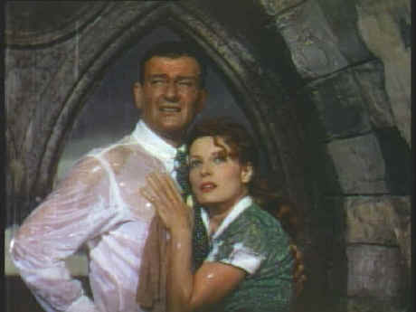

Artisan/1952/129m/FS 1.33
John Ford's production of The Quiet Man won him his fourth Oscar as Best Director. Ford pulled out all the blarney in his bag and sprinkled it throughout the movie. Set amongst the lush green meadows of Southern Ireland around a small town that could house a troop of Leprechauns, this is the story of a man come home to a boy's memories of a place so pure it could wash away the guilt that sometimes comes with manhood. Sean Thornton arrives back to Innisfree where his he was born and falls in love with the land and a lovely Irish female apparition before you can count him out. Thornton buys back his ancestral cottage out from under the nose of neighboring landowner, blustery Red Will Danaher. The rest of the film relates in rousing fashion Thornton's dilemma since the woman he falls in love with is none other than Danaher's sister.
 |
In the thick of the action©Universal |
The Ford family of actors
make The Quiet Man a special joy. Sean Thornton is a wonderful romantic role for
John Wayne. This is surely one of the purest romantic roles Wayne ever had. He gets in
several big, bold screen kisses before The Quiet Man comes to its loud finale. Wayne may
not be known for his romantic comedy prowess, but he acquits himself very well amongst all
the scene stealing extras in the Ford company. Coupled with Wayne for the second time is
Maureen O'Hara playing Mary Kate Danaher. Physically and temperamentally O'Hara is a grand
match for Wayne. She turns on the Irish charm with lots to spare and fires up her
feistiness with brisk physicality. Victor McLaglen completes the trio of stars. McLaglen,
who won an Oscar for Best Actor under Ford's guidance, overacts up a storm as Red Will
Danaher, and is hard put to muster up any charm cast in his most obnoxious screen role.
But as a foil to Wayne he's up to the task and he pulls his substantial weight in the trio
of stars. Along for the fun are Barry Fitzgerald and his brother Arthur Shields, Ward
Bond, and Francis Ford, the director's older brother.
The Quiet Man is the kind of film they never make any
more. It's blatantly sentimental and confident in its own humor. Ford's a story teller in
the grand tradition and that's The Quiet Man is a grand story.